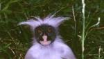

Información general sobre los monos
Bienvenido a esta pagina web, en este apartado podrás descubrir todo lo relacionado acerca de los monos, los tipos que existen y la gran relación humana que tienen.
Si esta interesado en algún mono en especial, quiere ofrecer mas información o detecta algún fallo, no dude en contactar con nosotros através de los diferentes canales en la parte inferior derecha de esta página.
¿Qué son los monos?
Los términos mono y simio son sinónimos en el idioma español, pero en zoología suele hacerse una distinción entre ambos, debido a la influencia del idioma inglés, en el que los términos equivalentes monkey y ape tienen diferentes significados. Aunque existen algunas similitudes entre ambos conjuntos de animales, las diferencias son muchas. Así pues, en el lenguaje científico, los monos actuales comprenden a los platirrinos (Platyrrhini o monos del Nuevo Mundo) y a los cercopitécidos (Cercopithecidae o monos del Viejo Mundo), pero no a los primates hominoides, más cercanos al ser humano, como el orangután, el gorila, el chimpancé y los gibones, que se consideran simios. A diferencia de estos, los monos poseen por lo general cola, tienen un esqueleto más primitivo y son más pequeños. Este uso de la palabra simio como traducción del inglés ape, restringida exclusivamente a los primates sin cola, es erróneo, y no corresponde al castellano. Se recomienda, para este uso, la palabra hominoideo, y también tienen tradición «antropoide», usado como sustantivo, y «mono antropomorfo».
Su tamaño es muy variable, tienen los ojos situados en la parte frontal de la cara y pulgares oponibles en las manos que les permiten trepar con facilidad a los árboles. Gracias a la constitución de sus manos también son capaces de usar ciertas herramientas para llevar a cabo algunas actividades de su vida diaria. Se conocen unas 260 especies diferentes: el babuino es el mano de mayor tamaño y el tití pigmeo el más pequeño. Son animales mamíferos, de comportamiento sociable que en ocasiones puede convertirse en violento si se sienten intimidados.
Los monos, por lo tanto, son primates que, por contar con características morfológicas similares a las del ser humano, reciben la calificación de antropoides. Es importante tener en cuenta que la noción de mono no tiene un valor taxonómico.
Tipos de mono
- Mono araña
El mono araña, también llamado coatá, es el nombre que reciben los monos del género ateles, caracterizados por sus miembros largos y su extraordinaria agilidad. El cerebro del mono araña es grande y tiene cierta semejanza con el de los monos superiores del viejo mundo. El cuerpo del mono araña está cubierto por un pelaje gris-amarillento, negro, pardo o castaño, que es más claro en las partes inferiores y los ojos están bordeados por un anillo blanco que les confiere un aspecto característico.
- Tití
Su cuerpo alcanza 25 a 30 cm de longitud y su cola no prensil mide de 35 a 41 cm. Pesa entre 300 y 500 g. Posee largos bigotes blancos.
Vive en grupos territoriales jerárquicos de hasta quince individuos con un área de acción promedio de 30 hectáreas, a veces asociados con titís de otras especies. Son diurnos y se desplazan con agilidad grandes distancias, de rama en rama o dejándose caer de una altura superior.
En cada grupo hay por lo menos dos machos y una hembra se aparea con todos los machos del grupo. El período de gestación es de 140 a 150 días y paren una o dos crías que dependen de la madre al menos tres semanas antes de adquirir independencia. Los machos ayudan en la crianza cargando las crías, que entregan a la madre media hora, cada tres horas, para la lactancia. Se alimentan principalmente de frutos y también de néctar, savia, flores, hojas, insectos, pequeños vertebrados y huevos de aves.
- Mono aullador
El mono aullador es uno de los monos más grandes y corpulentos del nuevo mundo; miden entre 56 y 92 cm de longitud, sin incluir la cola, y su peso oscila entre 4 y 10 kg. El pelaje es áspero, espeso y cubre todo el cuerpo, excepto la zona terminal de la cola, que está desnuda en su parte distal y ventral. La cola del mono aullador es utilizada como un órgano prensil y el área desprovista de pelo ayuda al animal a agarrarse mejor a las ramas de los árboles. Se reconocen muy bien por su cara desnuda de color oscuro, con una barba de pelo negro colgando del cuello, por su mandíbula inferior ancha y por el cuello hinchado. La coloración del pelo varía según los individuos y con la edad, pero en general es amarillenta, pardo rojiza o negra.
- Mono bonobo
El bonobo (pan paniscus), también llamado chimpancé pigmeo (o menos frecuentemente chimpancé grácil o chimpancé enano), es una de las dos especies que componen el género de los chimpancés, pan. La otra especie del género pan es el pan troglodytes, o chimpancé común. El bonobo fue descubierto por primera vez en 1928, por el anatomista americano harold coolidge, que presentó un cráneo en el museo tervuren en bélgica que se creía pertenecía a un chimpancé joven. Sin embargo, el mérito del descubrimiento del bonobo como especie diferenciada se atribuye al alemán ernst schwarz, que publicó el descubrimiento en 1929. La especie se distingue por la tendencia a que sus individuos anden erguidos en ocasiones, por su cultura matriarcal e igualitaria, y por el papel preponderante de la actividad sexual en su sociedad.
- Papilón
Papión es género de primates catarrinos de la familia cercopithecidae conocidos vulgarmente como papiones o babuinos. No obstante, a veces se extiende esta denominación también a los miembros del género theropithecus como el gelada e incluso al mandril. Pasando por alto estos dos monos, son los mayores monos del viejo mundo, los primates más corpulentos de hecho si se exceptúan los grandes simios y los simios menores

- Capuchino
Los monos capuchinos son los miembros del género cebus de primates platirrinos de américa central y del sur; deben su nombre a los monjes capuchinos, cuya capucha tiene un color similar a los pelos que rodean la cara de estos monos. Los capuchinos son pequeños, típicamente de unos 45 cm de largo, con una cola prensil que enrollan alrededor de las ramas para ayudarse en el movimiento alrededor de los árboles. Se cree que el mono capuchino es el más inteligente de los monos del nuevo mundo, le gusta explorar y cuando es observado en cautiverio, a menudo reduce a piezas las cosas que halla. En general el mono joven es más claro que el adulto, su cola es del mismo largo que el cuerpo. Normalmente vive en manada, por eso cuando se liberan capuchinos cautivos se hace siempre en grupo.
- Chimpancé
El chimpancé, simio de áfrica ecuatorial. Por la estructura física y genética del chimpancé, está considerado el animal más estrechamente emparentado con el ser humano. Hay dos especies: el chimpancé común y el bonobo o chimpancé pigmeo. El primero se distribuye desde sierra leona y guinea, en la costa atlántica, hasta los lagos tanganica y victoria, en el este; el segundo se encuentra tan sólo en la parte oriental de la cuenca del río congo.
- Mono colobus
Género de monos del viejo mundo, subfamilia colobinae, familia cercopithecidae, que viven en los bosques de áfrica. Está constituido por ocho especies: c. Angolensis (colobo angolano), c. Badius o c. Rufomitratus (colobo rojo o bayo), c. Guereza (colobo guereza u oriental blanco y negro), c. Kirkii (colobo de kirk), c. Polykomos (colobo rey u occidental blanco y negro), c. Satanás (colobo negro), y c. Verus (colobo olivo). Algunos autores reconocen al procolobo como un género separado y entonces el colobo olivo se reconoce como la especie p. Verus
 - Gibón
Los gibones, o simios menores, tienen un parentesco bien cercano a los seres humanos y grandes simios. Los científicos estiman que provienen de una misma rama en la evolución que radió, o separó, de la de los grandes simios hace unos 22 millones de años.
El aspecto físico de los gibones se asemeja mucho al de los monos pero no tiene cola. Gracias a sus largos brazos, estos
- Gorila
El gorila vive en el áfrica tropical, en las selvas húmedas de las tierras bajas y montañas. Ocasionalmente habitan en las selvas de bambúes hasta 3.500 metros de altitud.
Después de un período de gestación de ocho o nueve meses nace una cría de gorila. Las crías son totalmente dependientes de su madre. Empiezan a comer materia vegetal a los dos meses y medio. Paren cada cuatro años.
- Orangután
Los primates se originaron de mamíferos con dietas principalmente insectívoras, pero en la actualidad estas se pueden dividir en tres grupos dietéticos: frugívoros, folívoros (que se alimentan de hojas y brotes) e insectívoros. Sin embargo, una especie considerada como insectívora no se alimenta exclusivamente de artrópodos, por ejemplo el tití bebeleche ,se alimenta de insectos en un 78%, pero complementa su dieta con frutas (18,5%), savia de los árboles (4,8%) y néctar de flores (0,3%). El chimpancé común, que usualmente es vegetariano no desaprovecha la oportunidad de dar caza a otros monos para obtener una porción de proteína. Estas dietas están relacionadas con las adaptaciones en la dentición e intestinos que se han desarrollado a lo largo de su historia evolutiva. Los alimentos en los hábitats de los primates varían considerablemente a lo largo del año, tanto en abundancia como en distribución, lo que tiene una implicación sobre las áreas de actividad. Usualmente los folívoros tienen áreas más amplias que los frugívoros. Por ejemplo, los folívoros monos aulladores recorren en busca de alimento un territorio comprendido entre 4 y 60 km, mientras que los frugívoros monos ardilla (saimiri boliviensis) ocupan territorios entre 63 y 130 km ,hasta territorios de 250 ha. Función de reproducción: son las hembras las que inician la actividad sexual. Cuando entran en su período de fertilidad o celo, tratan de seducir a los machos, exhibiéndose, "coqueteando" y mostrándose sumisas. En ese clima de romanticismo, no hay macho que se resista, y después de los primeros contactos físicos, mantienen relaciones sexuales y copulan.
- Macaco
Es un macaco típico, común desde afganistán al norte de la india y china meridional. Los machos crecen y alcanzan una altura de 60 cm, con una cola de unos 30 cm. Presentan dimorfismo sexual; los machos pueden pesar hasta 6 kg; las hembras hasta la mitad y medir 40 cm. Tienen un color que varía desde el marrón al gris, con la cara rosada. Tienen una expectativa de vida de cerca de 25 años. No se conocen subespecies
Relación con los humanos
Suele decirse que los monos son los animales más parecidos a las personas. Estos mamíferos no solo comparten rasgos físicos con el Homo sapiens, sino que además pueden tener conductas y actitudes semejantes.
Los orangutanes están entre los monos más conocidos. Hace algunas décadas, los científicos descubrieron que son capaces de utilizar herramientas para acceder a los alimentos. Los chimpancés y los gorilas también forman parte del grupo de los monos.
Los científicos tienen una especial fascinación por los monos y sus parecidos con nuestra especie. Por esta razón, llevan décadas estudiándolos para llegar a entender cuán cerca estamos realmente. Uno de los puntos en los que nos relacionamos es el sentido de justicia; en el año 2003 se realizaron importantes descubrimientos con respecto a esto, a raíz de un estudio en el cual un grupo de monos expresaba descontento si no recibía una recompensa justa por su trabajo.
El experimento tuvo lugar en Estados Unidos y consistió en reunir a un grupo de capuchinos hembras, a las cuales les asignaron una tarea determinada luego de la cual les daban una recompensa que podía consistir en uvas o pepinos. Cabe señalar que esta especie prefiere las uvas; por eso, las que recibían pepinos se quejaban, los tiraban e incluso dejaban de colaborar. En otros casos, algunos de los individuos que recibían uvas sin creer merecerlas las devolvían y las cambiaban por pepinos.
Otra de las similitudes entre nosotros y los monos es que a ellos también les gustan las cosquillas. Si bien otras especies pueden disfrutarlas, al parecer los humanos y los primates las relacionan con la risa, algo que no pasa en el resto. Los monos usan las cosquillas como una forma de juego entre ellos y emiten un jadeo leve que podemos interpretar como un equivalente de la risa.
Al igual que nosotros, algunos monos se besan, se abrazan y se dan palmadas en la espalda con sus amigos. Se trata de una forma de expresar su cariño y su fidelidad o incluso de hacer las paces luego de una pelea.
La alimentación es uno de los comportamientos en los que se puede observar diferencias entre monos y humanos. En general los primates son considerados como animales omnívoros, que pueden alimentarse de animales y plantas, pero como vimos nuestros monos son Folívoros (consumen hojas) y frugívoros (consumen frutos). Como seres humanos podemos tener acceso a un sinfín de tipos de comida, desde platos típicos vegetarianos de la india hasta jugosa carne de Brasil y Argentina. En el mundo natural los monos no tienen acceso a esta ventaja y se alimentan de lo que hay disponible, tienen restringido comer hasta saciarse y engordar. En la mayoría de los hábitats hay variaciones espacio-estacionales y por tanto de la cantidad y calidad nutricional del alimento que puedan conseguir, la cual es la cantidad de energía adquirida por los nutrimentos de la comida, conduciendo a periodos de escases y abundancia de comida, provocando fechas de alta incorporación de nutrientes y otras de poca adquisición de nutrientes para subsistir.
En cautiverio, como en zoológicos y en nuestras casas, todos los animales salvajes incluyendo los monos, se les remueven mucha de la complejidad y estacionalidad de la adquisición de los recursos alimenticios. Los humanos tendemos a alimentar a los animales en nuestro mismo patrón alimenticio, desayuno, comida y cena. En zoológicos se les da lo mismo año tras año y las dietas son hechas muchas veces con la misma fórmula, ó sea la misma cantidad y calidad nutricional todos los días. Además, están típicamente alimentados con cosas de importancia en la dieta humana: frutas y vegetales comerciales, carne y productos lácteos, pollo, comida de gato y perro, estos productos solo son superficialmente similares a la comida en la naturaleza. Por tanto la comida adquirida por los animales en los zoológicos no se puede asumir como balanceada aun cuando ellos puedan escoger la cantidad y el tipo de alimento que consumen, ya que es inhabilitada la capacidad que sí tienen en vida libre de autoseleccionar los más apropiados niveles nutricionales. El enriquecimiento en la vida de los animales hecho en algunos zoológicos es fundamental, es desarrollado por expertos nutricionistas de vida salvaje, ya que realizan las correctas decisiones a partir de estudios de dieta y nutrición de animales en la naturaleza.